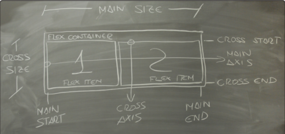

Flex box

El flexbox o también llamado posicionamiento flexible, ayuda a acomodar de una mejor manera los elementos de una página, tanto en dimensión como en
orientación, sin importar la estructura que ya tenga el modelo HTML aun no es 100% compatible con todos los navegadores, la idea principal
de un contenedor flexible es que se pueda adaptar al área disponible, teniendo esto en cuenta, también habrían unos flex ítems que se acomodarían dentro del flex
container, en este caso no hay posicionamiento de izquierda o derecha , si no que tendríamos (main axis) y (cross axis) que se ajustarían a los ejes que dispone el dispositivo
(Recio García, 2016)